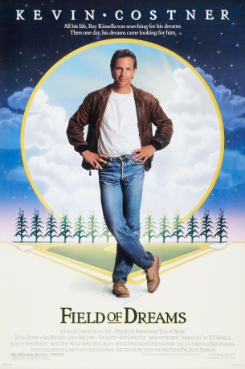

#7040 Feld der Träume
Alternativ: Field of Dreams
Auszeichnungen: für 3 Oscars nominiert
 
 IMDB-Wertung: 7.5 / 10
IMDB-Wertung: 7.5 / 10  Metascore: 0
Metascore: 0 
Iowa farmer Ray Kinsella hears a voice in his corn field tell him, "If you build it, he will come." He interprets this message as an instruction to build a baseball field on his farm, upon which appear the ghosts of Shoeless Joe Jackson and the other seven Chicago White Sox players banned from the game for throwing the 1919 World Series. When the voices continue, Ray seeks out a reclusive author to help him understand the meaning of the messages and the purpose for his field.
Jahr: 1989
Dauer: 105 Minuten
FSK: 6
Land: USA Studio: Universal PicturesTonspuren:
Untertitel: Deutsch,
Auflösung: 1080p (1920x1040) Größe: 9195 MB
Genre: Drama, Fantasy, Familie, Sport
Regisseur: Phil Alden Robinson
Drehbuch: W.P. Kinsella
Soundtrack:
Darsteller:
 Kevin Costner als Ray Kinsella
Kevin Costner als Ray Kinsella Amy Madigan als Annie Kinsella
Amy Madigan als Annie Kinsella Gaby Hoffmann als Karin Kinsella
Gaby Hoffmann als Karin Kinsella Ray Liotta als Shoeless Joe Jackson
Ray Liotta als Shoeless Joe Jackson Timothy Busfield als Mark
Timothy Busfield als Mark James Earl Jones als Terence Mann
James Earl Jones als Terence Mann Burt Lancaster als Dr. Archibald 'Moonlight' Graham
Burt Lancaster als Dr. Archibald 'Moonlight' Graham Frank Whaley als Archie Graham
Frank Whaley als Archie Graham Dwier Brown als John Kinsella
Dwier Brown als John Kinsella Kelly Coffield Park als Dee, Mark's Wife
Kelly Coffield Park als Dee, Mark's Wife Michael Milhoan als Buck Weaver - 3B
Michael Milhoan als Buck Weaver - 3B Steve Eastin als Eddie Cicotte - P
Steve Eastin als Eddie Cicotte - P- Charles Hoyes als Swede Risberg - C
 Art LaFleur als Chick Gandil - 1B
Art LaFleur als Chick Gandil - 1B Lee Garlington als Beulah Gasnick
Lee Garlington als Beulah Gasnick- Mike Nussbaum als Principal
 Larry Brandenburg als PTA Heckler
Larry Brandenburg als PTA Heckler- Geoffrey Nauffts als Boston Pump Jockey
- Anne Seymour als Chisolm Newspaper Publisher
- Brian Waldvogel als Additional Ballplayer
- Brian E. Frankish als Clean-Shaven Umpire
 Ed Harris als The Voice , unconfirmed
Ed Harris als The Voice , unconfirmed Ben Affleck als Baseball Fan at Fenway Park , uncredited
Ben Affleck als Baseball Fan at Fenway Park , uncredited Matt Damon als Baseball Fan at Fenway Park , uncredited
Matt Damon als Baseball Fan at Fenway Park , uncredited- James Andelin als Feed Store Farmer
- Mary Anne Kean als Feed Store Lady
- Fern Persons als Annie's Mother
- Mary McDonald Gershon als PTA Heckler
- Robert Kurcz als PTA Heckler
- Don John Ross als Boston Butcher
- Beatrice Fredman als Boston Yenta
- C. George Biasi als Man in Bar #1
- Howard Sherf als Man in Bar #2
- Joseph R. Ryan als Man in Bar #3
- Joe Glasberg als Customer
- Mark Danker als Additional Ballplayer
- Frank Dardis als Additional Ballplayer
- Jim Doty als Additional Ballplayer
- Mike Goad als Additional Ballplayer
- Jay Hemond als Additional Ballplayer
- Mike Hodge als Additional Ballplayer
- Steve Jenkins als Additional Ballplayer
- Terry Kelleher als Additional Ballplayer
- Ron Lucas als Additional Ballplayer
- Fred Martin als Additional Ballplayer
- Curt McWilliams als Additional Ballplayer
- Jude Milbert als Additional Ballplayer
- Steve Olberding als Additional Ballplayer
- Gene Potts als Additional Ballplayer
- James Roth als Additional Ballplayer
Datei: X:\1989\Feld der Träume (1989, FSK6, 1920x1040).mkv seit 18.09.2017
Festplatte: HD 1987-1991
 Es gibt insgesamt 54 Filme in der Gruppe '1989'
Es gibt insgesamt 54 Filme in der Gruppe '1989'